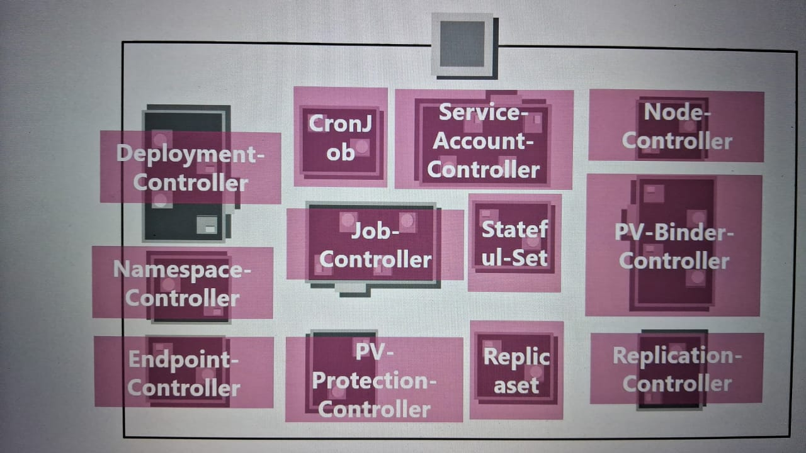
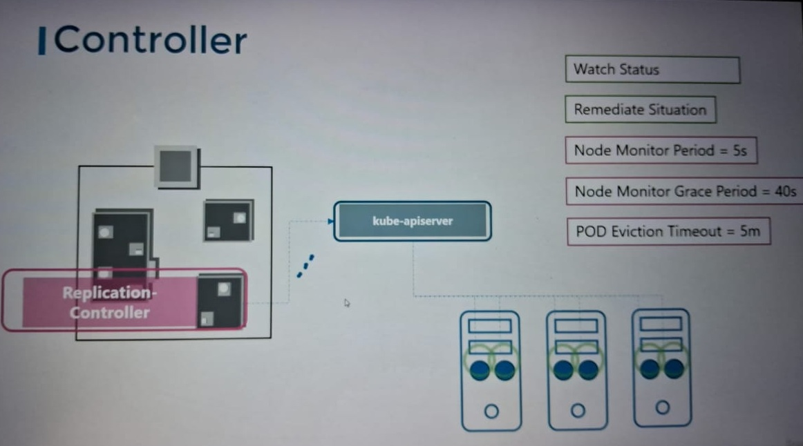
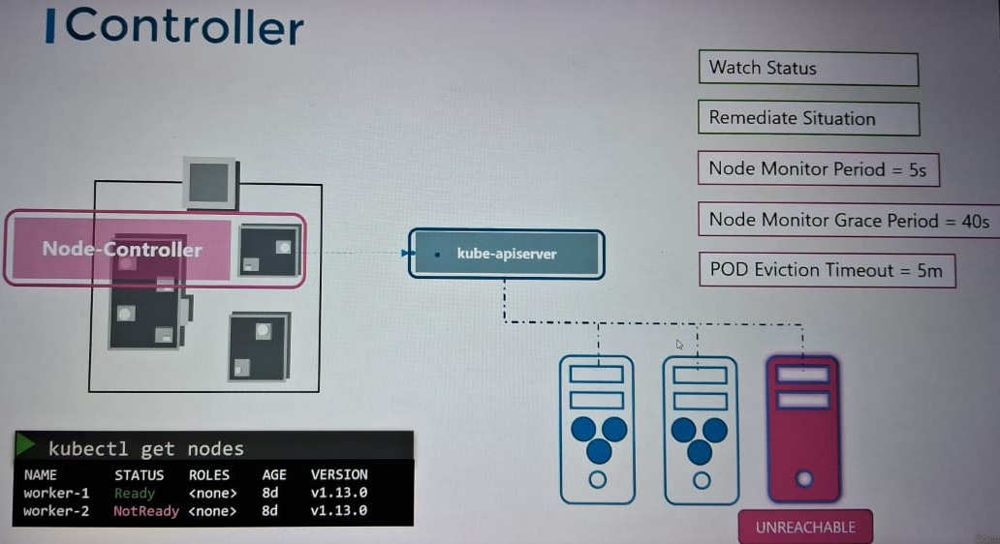
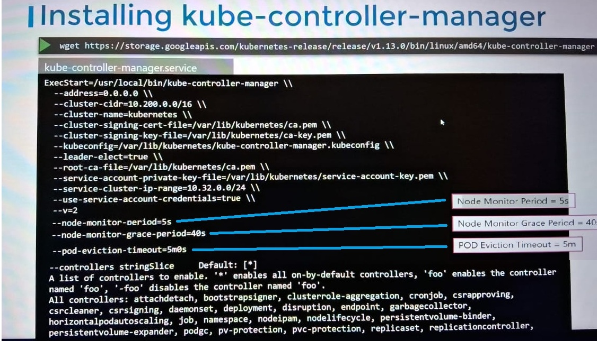
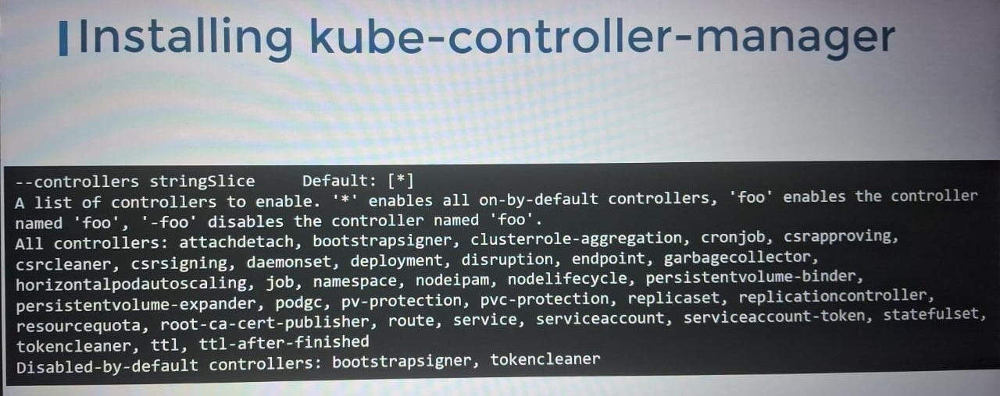
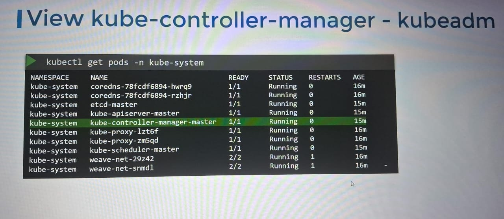
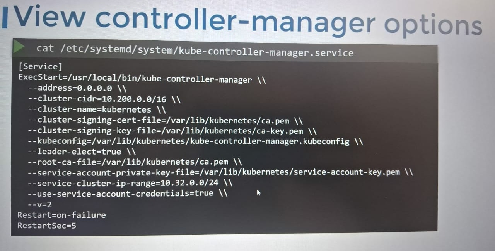
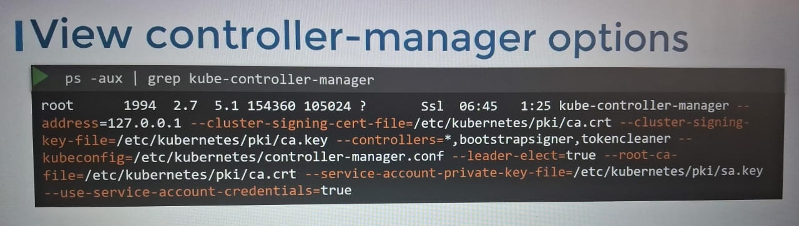

Kube Controller Manager:
Controller is a process that continuously monitor the state of components with the syste m and bringing the whole system.
These are bundles in Kubernetes are KUBE-COTROLLER-MANAGER.
NODE CONTROLLER:
Like Node controller is responsible for monitoring the status of nodes , and take necessary action keep the application running.
Node controller checks the status for nodes availibilty in every 5 secs.
if it stop receiving heartbeat from the nodes, the nodes marked as unreachable but before marking it unreachable it waits from 40sec.
Once the controller marked the node as unreachable , controller will wait fr 5 mins to come up the node online. If node doesn't come up in 5 mins controller removed the pods on faulty node and provision them in working nodes if they are part of repicasets.
 REPLICATION CONTROLLER:
it is responsible to monitor the replica sets and ensure that desired number of pod are available all the time even its just one or hundred.
if a pod dies it creates another one.
REPLICATION CONTROLLER provide few features:
If any pod dies by any reason , it will create another pod so same specification without a down time to application.
Replication controller is effective on single pod or multiple pods.
Replication controller help in load balancing and scaling the application pods..
Let suppose we have one pod which is providing the application service to nuber of user , if suppose the user increases then to full fill all the user Replication controller will create new pods to service users by scailing the pods without any application downs time.
Installing Kube-Controller-Manager:
Downloading KUBE-COTROLLER-MANAGER :
Below image we can see all the controllers , we can customize it by monitoring all the components or by doing selective monitoring my rmove the components from KUBE-COTROLLER-MANAGER.
Listing Kube Controller Manager as pod:
other than kubeadm
Kube Controller manager as a process:
